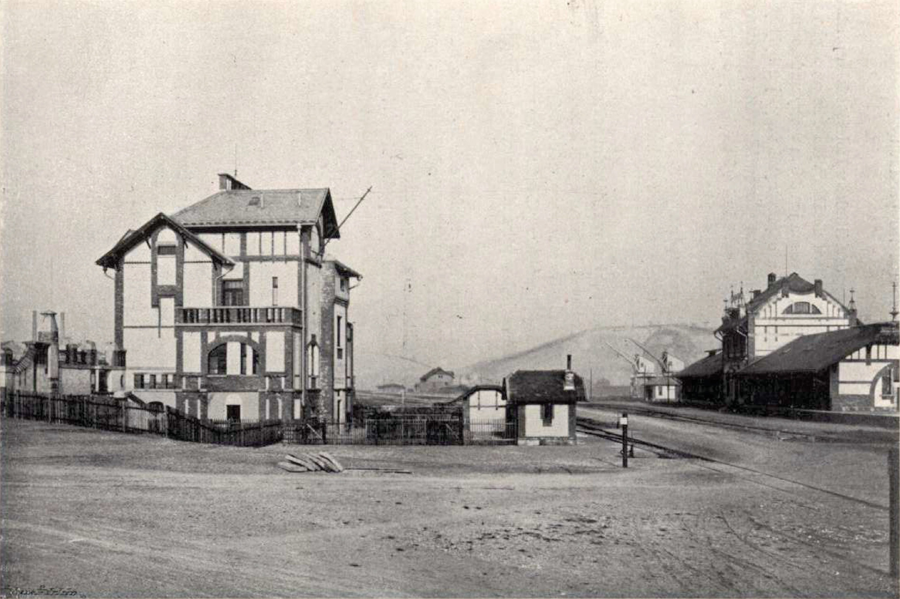

Jediný pražský přístav, kde se setkávala lodní, železniční a silniční doprava. Vznikl v letech 1892–1894 umělým vyhloubením bazénu 750 m dlouhého. Secesní budovy přístavního dozorství postavil roku 1906 architekt František Sander. V 90. letech lodní provoz ustal; dnes část areálu tvoří rezidence Prague Marina.
Postav se čelem k řece — historická budova přístavního dozorčího stojí přímo na hraně nábřeží. Hledej původní průmyslové detaily fasády.
Otoč se na jihovýchod (136°) — přesně tímto směrem byl pořízen historický snímek. Srovnej panorama s dobovým záběrem v AR.
Všimni si pozůstatků původních přístavních prvků — kolejí, kotvicích ok a průmyslových sloupů podél nábřeží.